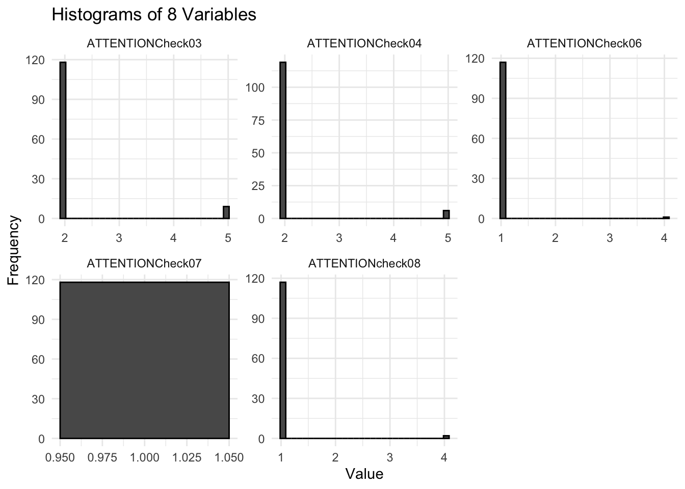
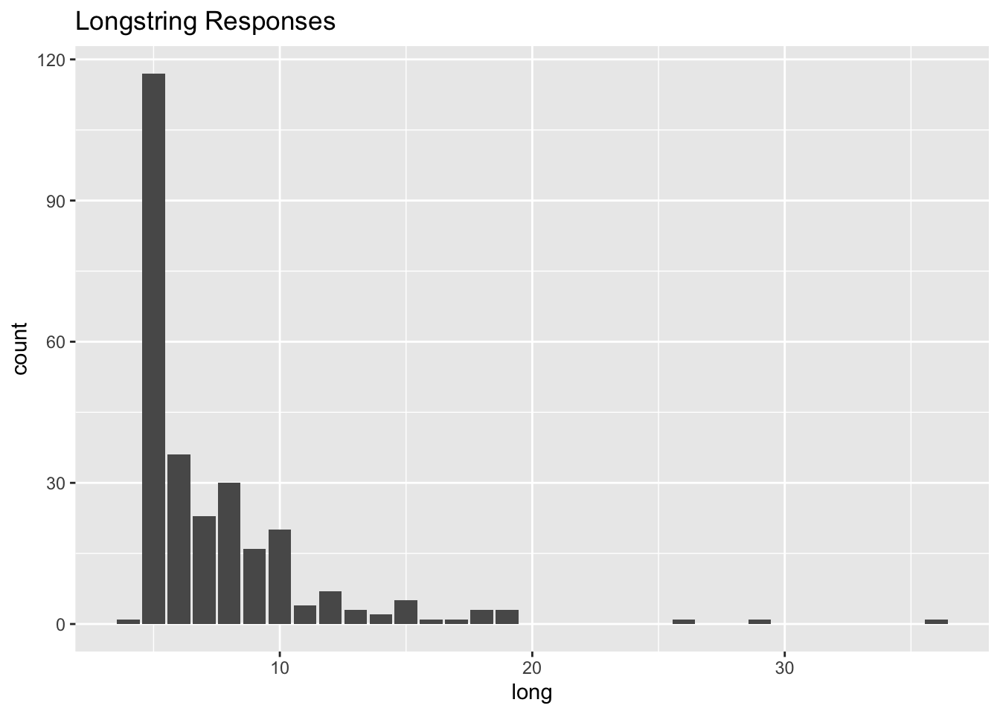

Show the code
org_data <- read_sav("SGI Study Deidentified Subset.sav")Seungju Kim
Load relevant libraries.
Load the data
Basic insight into the data.
| rows | columns | discrete_columns | continuous_columns | all_missing_columns | total_missing_values | complete_rows | total_observations | memory_usage |
|---|---|---|---|---|---|---|---|---|
| 275 | 384 | 42 | 335 | 7 | 57067 | 0 | 105600 | 1746184 |
Let’s visualize the data.
There’s a couple of noteworthy things here:
Let’s look into our missing values more
Because we have over 350 variables, we may be unable to read every variable. This graph does however show us that missing data is quite troublesome.
What items and methods are available to us in determining mischievous responders. First there are two types of “problematic” responders we will be examining:
Let us first examine of the 4 attention item checks, how many were failed.
data_long <- pivot_longer(org_data, cols = c("ATTENTIONCheck03", "ATTENTIONCheck04", "ATTENTIONCheck06", "ATTENTIONCheck07", "ATTENTIONcheck08"), names_to = "Variable", values_to = "Value")
# Plot
ggplot(data_long, aes(x = Value)) +
geom_histogram(bins = 30, color = "black") + # Adjust bin count as needed
facet_wrap(~ Variable, scales = "free") + # Wrap by variable, allow scales to adjust
theme_minimal() + # Optional: Use a minimal theme for a cleaner look
labs(title = "Histograms of 8 Variables", x = "Value", y = "Frequency") # Customize labels
Our findings show that very few individuals failed all if any attention checks. Next we look to see if who failed more than one attention check.
# Assuming your data frame is named data
data <- org_data %>%
mutate(ATTENTIONCheck03_coded = case_when(
ATTENTIONCheck03 == 2 ~ 0,
ATTENTIONCheck03 > 2 ~ 1,
TRUE ~ NA_real_),
ATTENTIONCheck04_coded = case_when(
ATTENTIONCheck04 == 2 ~ 0,
ATTENTIONCheck04 > 2 ~ 1,
TRUE ~ NA_real_),
ATTENTIONCheck06_coded = case_when(
ATTENTIONCheck06 == 1 ~ 0,
ATTENTIONCheck06 > 1 ~ 1,
TRUE ~ NA_real_),
ATTENTIONCheck07_coded = case_when(
ATTENTIONCheck07 == 1 ~ 0,
ATTENTIONCheck07 > 1 ~ 1,
TRUE ~ NA_real_),
ATTENTIONcheck08_coded = case_when(
ATTENTIONcheck08 == 1 ~ 0,
ATTENTIONcheck08 > 1 ~ 1,
TRUE ~ NA_real_),
ATTENTION = rowSums(select(., ends_with("_coded")), na.rm = TRUE))
# This adds coded variables for each ATTENTIONCheck variable and then sums them into Sum_Variable.
# The na.rm = TRUE argument in rowSums ensures that NA values do not prevent summation,
# but they will not be included in the sum.
table(data$ATTENTION)
0
275 Let’s examine straight-lined responses.

Non-dataframe detected. Attempting to coerce to dataframeTable of Longstring Responses | |
|---|---|
Var1 | Freq |
4 | 1 |
5 | 117 |
6 | 36 |
7 | 23 |
8 | 30 |
9 | 16 |
10 | 20 |
11 | 4 |
12 | 7 |
13 | 3 |
14 | 2 |
15 | 5 |
16 | 1 |
17 | 1 |
18 | 3 |
19 | 3 |
26 | 1 |
29 | 1 |
36 | 1 |
What we see here is that there are a several individuals whom responded consecutively with the same response. We need to decide what our cut off point is going to be.
So who are these individuals? Let’s take a look.
[1] 114222854960 114222854341 114222854936 114222866807 114222875957
[6] 114222879706 114222900723 114222902777 114222913830 114222933803
[11] 114222937904 114222949561 114222953917 114223006287 114223015595
[16] 114223015795 114223016830 114223029445 114223075453 114223083824
[21] 114223138297 114223142628 114223174577 114223230108 114223260607
[26] 118222800053 118226006940 114231009817
attr(,"label")
[1] "RespondentID"
attr(,"format.spss")
[1] "F8.2"
attr(,"display_width")
[1] 15This output gives us the the RespondentID’s of individuals who had longstring values greater than or equal to 12.
Let’s say we want to remove them:
Now those respondents are removed.